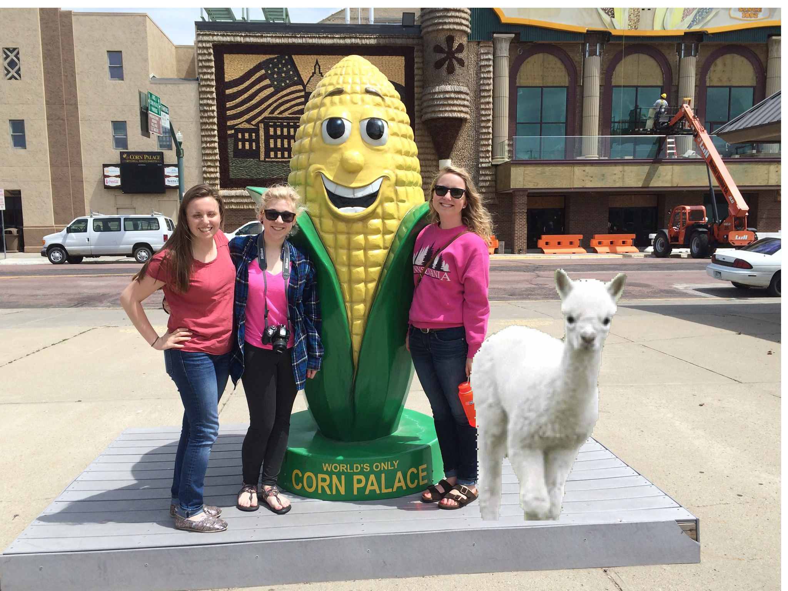
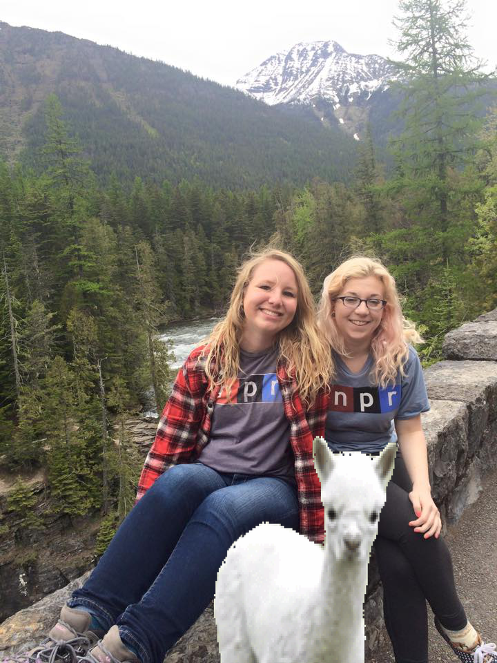
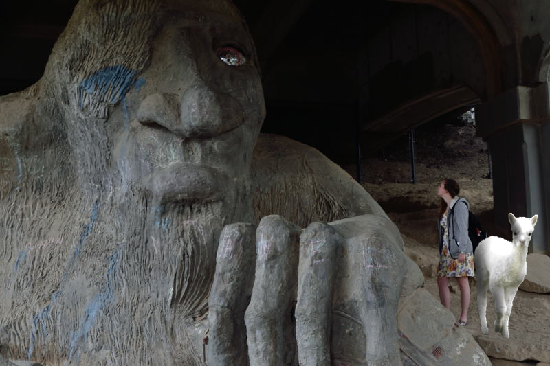
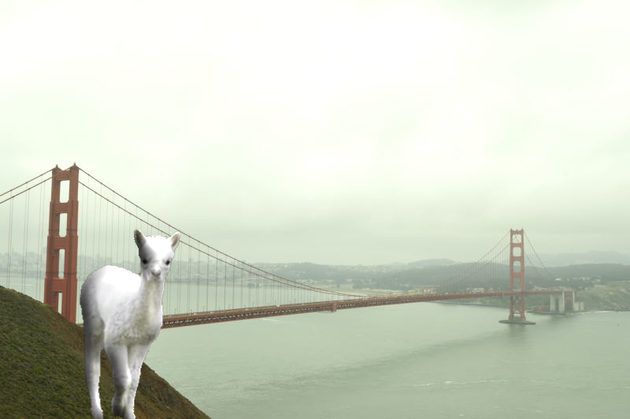
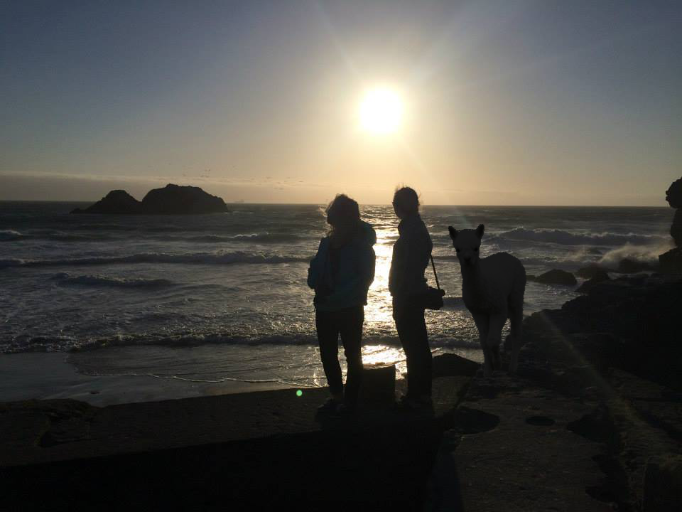

Llamas of America
Follow the journey of Ally, the llama, on her cross country road trip as she travels cross country to experience all the wonders of the great USA and visit llama friends near and far
close


Here I visited the one and only Corn Palace. Pretty unique! Not a ton else to do in South Dakota.
There was a lot of driving and a lot of open land. As you probably know, llamas originated from the central plains of North America so this trip was very nostalgic for me.
As we got closer to Wyoming, there were some amazing nature scenes!
There was a lot of driving and a lot of open land. As you probably know, llamas originated from the central plains of North America so this trip was very nostalgic for me.
As we got closer to Wyoming, there were some amazing nature scenes!
close


I was so excited to make it out to the west coast for the first time! Seattle was v hip. There were a lot of small coffee shops and every composts. As a herbivore I was thrilled with the variety of vegetarian options. I got to meet this cute giant troll in Fremont too! How quirky.
Also, the background picture on this site was taken by myself from the top of the Space Needle. Great view!
Also, the background picture on this site was taken by myself from the top of the Space Needle. Great view!
close


Katy Perry promised me California Girls were unforgettable so I was pumped to make it out here.
Of course, I took a selfie by the Golden Gate bridge. Who wouldn't? It was pretty foggy up there but us llamas have exceptional vision so living out here wouldn't be an issue at all for me.
I was surprised by how cold it was in San Francisco after having this image of sunny California in my mind but I was soon reminded of a Mark Twain quote, "The coldest winter I ever spent was a summer in San Francisco." Definitely can see that now.
Of course, I took a selfie by the Golden Gate bridge. Who wouldn't? It was pretty foggy up there but us llamas have exceptional vision so living out here wouldn't be an issue at all for me.
I was surprised by how cold it was in San Francisco after having this image of sunny California in my mind but I was soon reminded of a Mark Twain quote, "The coldest winter I ever spent was a summer in San Francisco." Definitely can see that now.